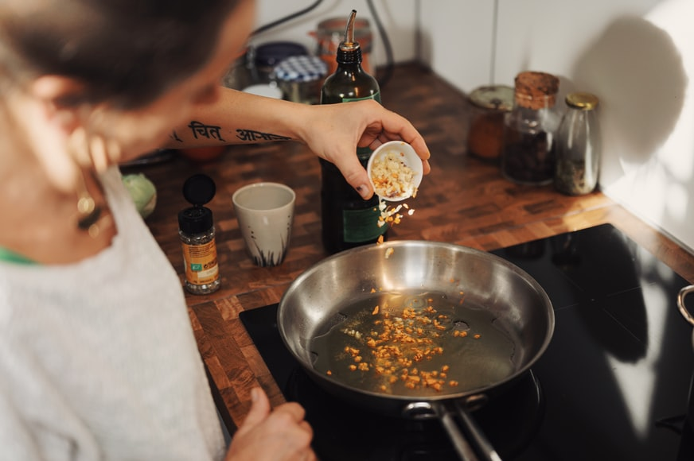
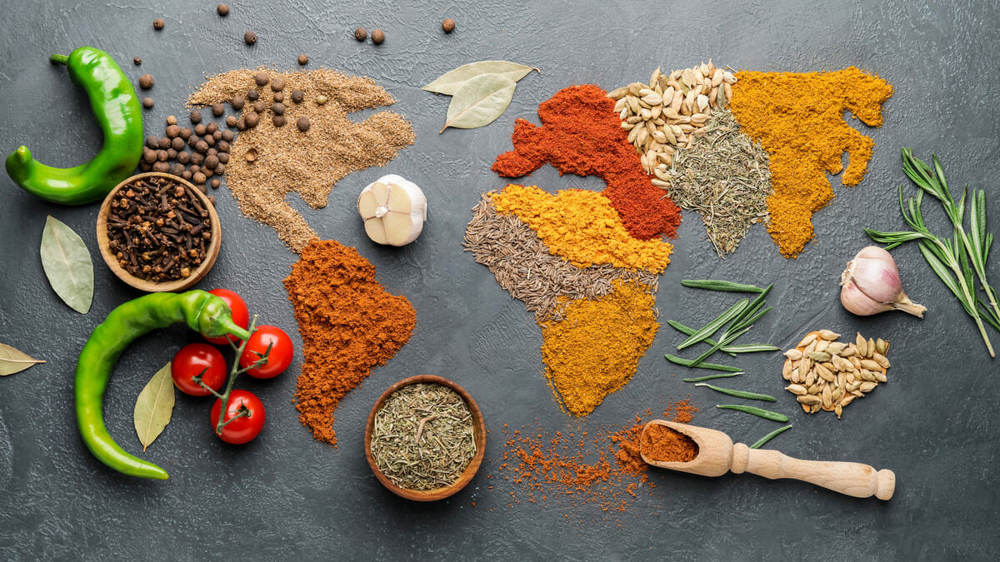

Seja qual for o objetivo principal, é importante aprender a cozinhar. A culinária foi desenvolvida para preparar os alimentos para consumo. Não apenas deixá-los assados ou cozidos, mas acrescentar sabor ao prato. Dessa forma, cozinhar é fundamental para melhorar o alimento que comemos. Além disso, cozinhar é uma das habilidades mais básicas que uma pessoa deve ter. Ela não apenas saberá como ser independente, como também aprenderá outras coisas, como: Responsabilidade; Funções motoras; Como ler e interpretar receitas; Disciplina e atenção; Até mesmo mais sobre si mesma, os sabores e aromas que mais lhe agradam.
Assim, é essencial aprender a cozinhar. E, como ninguém nasce com essa habilidade, existe a culinária para iniciantes. Basicamente, trata-se de aprender como cozinhar, os conceitos, e os pratos mais simples. Dar o primeiro passo é essencial para essa jornada. Pode ser pedindo ajuda para algum parente ou amigo. Ou mesmo existem aqueles que preferem cursos de culinária. Atualmente, com a internet, existem centenas de aulas e treinamentos acessíveis. E se você preferir um curso tradicional, pode procurar pacotes com bons preços. A maioria das escolas de culinária oferecem aulas para iniciantes. Apesar de precisar desembolsar um certo valor, pode aprender com profissionais. Inclusive, existem pacotes e aulas avulsas, para quem só quer algumas dicas. Dessa forma, você pode dar o primeiro passo para começar a aprender.
Todas as pessoas têm capacidade para aprender a cozinhar. A culinária para iniciantes envolve conhecer o básico e, principalmente, se arriscar. Existem diversas receitas simples de serem feitas, e que são um grande passo. Cozinhar é sempre se aprimorar, desenvolver novas experiências e aproveitar para se conhecer mais profundamente.
